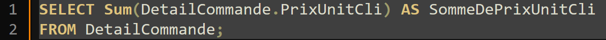

Analyses des bases de données de KDou
Pour la mission 1, nous avons analysé les données en identifiant les clés primaires (référence produit, numéro fournisseur) et étrangères (numéro fournisseur, code client). Les réponses aux questions incluent : 3 clients à Nantes, 5 en région parisienne, 10 fournisseurs en Amérique du Nord, et 7 pays de l'UE autres que la France. Marie Delamare a l'adresse "22, rue H. Voiron". Nous avons trouvé des erreurs de saisie dans les pays (ex. "Suède" vs "Suéde"). Nous avons aussi déterminé les produits commandés par Mikal Pavbo et les fournisseurs Singapouriens
Pour cette mission, nous avons utilisé des requêtes SQL pour analyser différentes données de la base. Nous avons d'abord filtré les produits à moins de 50€ provenant d'Italie et d'Allemagne en croisant les tables Fournisseur et Produit. Ensuite, nous avons identifié le fournisseur de Singapour et les produits associés en filtrant par pays et en vérifiant les catégories. Pour une analyse plus ciblée, nous avons recherché les clients à Paris ayant acheté des produits d'une catégorie spécifique via une jointure entre les tables Client, Commande, et Produit. Nous avons ensuite calculé le prix moyen, le prix minimum et le prix maximum des produits en utilisant les fonctions AVG(), MIN(), et MAX() dans SQL. Par ailleurs, nous avons compté les fournisseurs par fonction pour mieux comprendre la répartition des rôles dans l'entreprise. Nous avons aussi recherché les produits conditionnés en carton ou en bouteille en utilisant des filtres sur la quantité par unité. Une autre analyse a permis de trouver les clients n'ayant pas encore passé de commande. Enfin, nous avons regroupé les clients par ville pour identifier celles avec le plus grand nombre de clients, ce qui permet d'orienter les stratégies marketing et commerciales. Cette série d'analyses nous a permis de mieux comprendre le fonctionnement de la base de données et de dégager des tendances utiles pour optimiser l'offre de l'entreprise. 
Nous avons utilisé des requêtes SQL pour rechercher des produits des catégories "Boissons" et "Desserts" à 50€ ou plus, filtrés par pays (Royaume-Uni, USA, France, Allemagne, Australie). Le calcul du chiffre d'affaires a été effectué en prenant en compte le prix unitaire, la quantité, les remises et les frais de port. Nous avons identifié les fournisseurs sans commandes et analysé les clients en fonction des villes et des remises appliquées. Des erreurs d'orthographe dans les noms de pays ont nécessité des ajustements. Enfin, des analyses sur les produits populaires ont permis d'optimiser l'offre et la gestion des stocks.